Blumenau: Tagesausflug ins Itajaí-Tal. Blumenau wurde 1850 vom deutschen Apotheker Hermann Blumenau gegründet, und das sieht man bis heute: Fachwerk, deutsche Namen auf dem Friedhof, Bierkrüge. Im Parque Vila Germânica findet seit 1984 jedes Jahr das Oktoberfest statt, eines der größten der Welt. Auch die Eisenbahn-Brauerei stammt von hier.
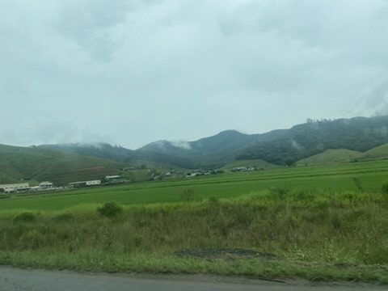
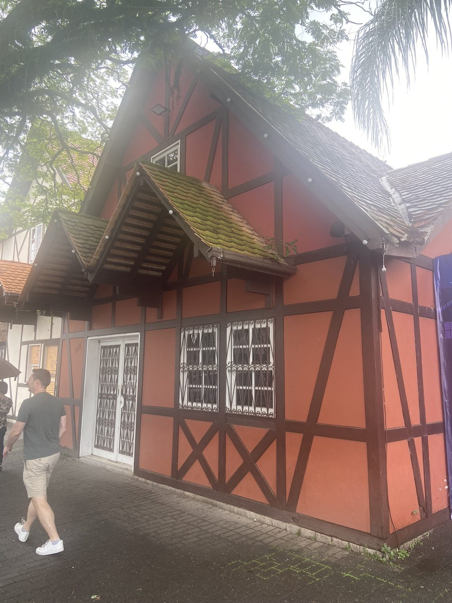
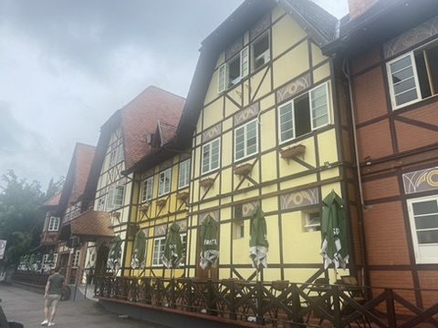
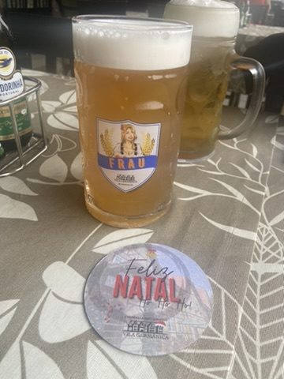
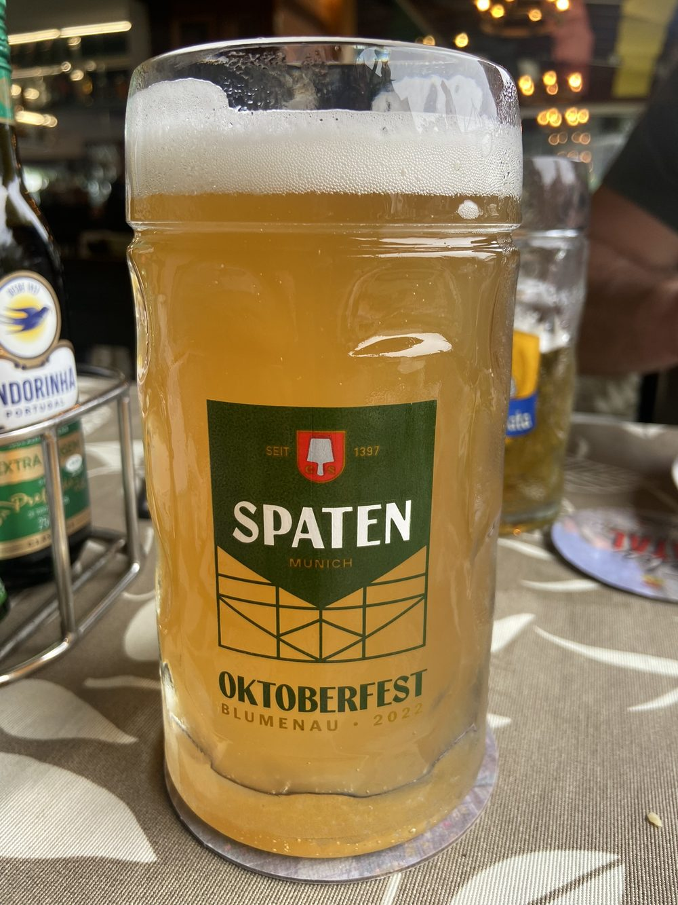
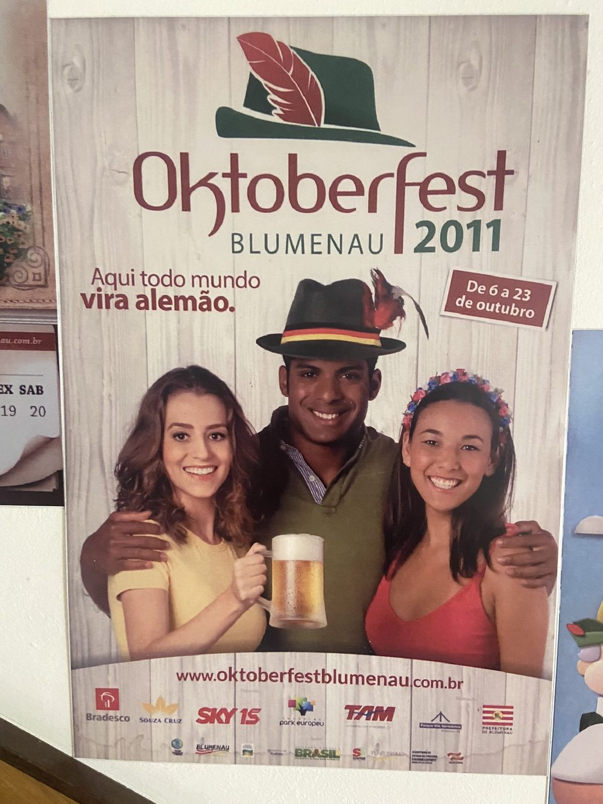
„Hier wird jeder zum Deutschen" – das Motto des Oktoberfests von 2011.
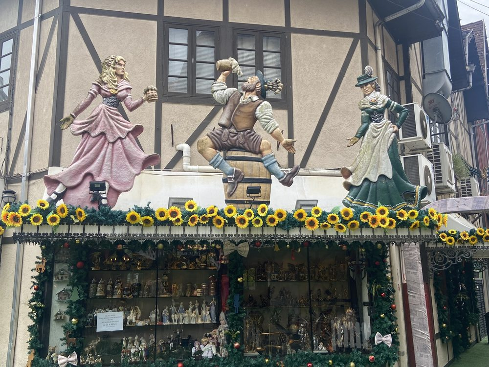
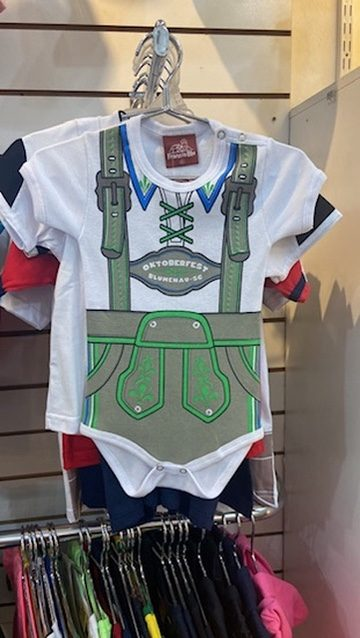
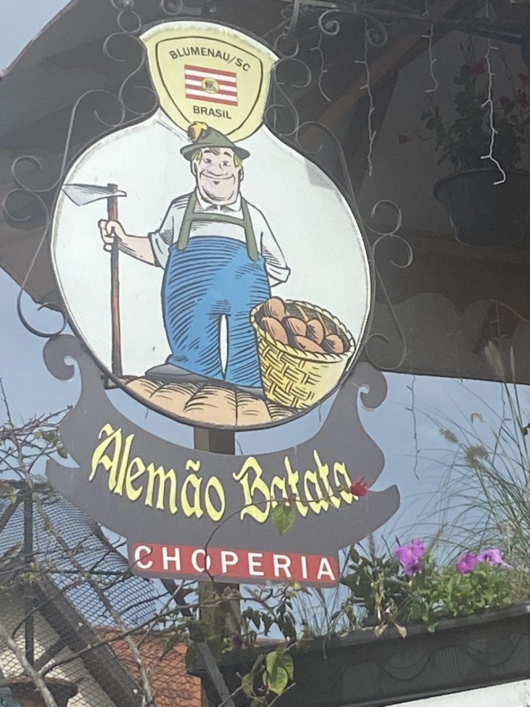
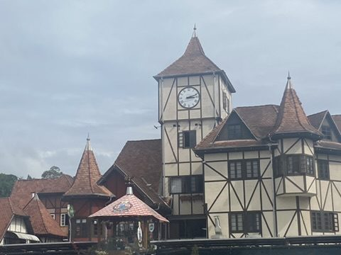
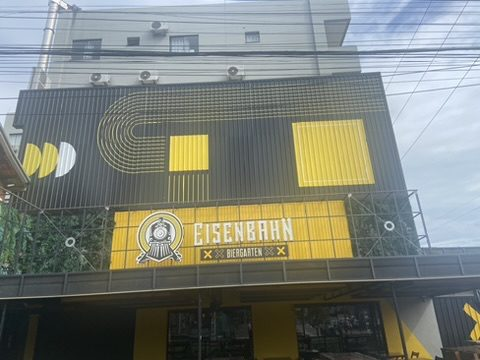
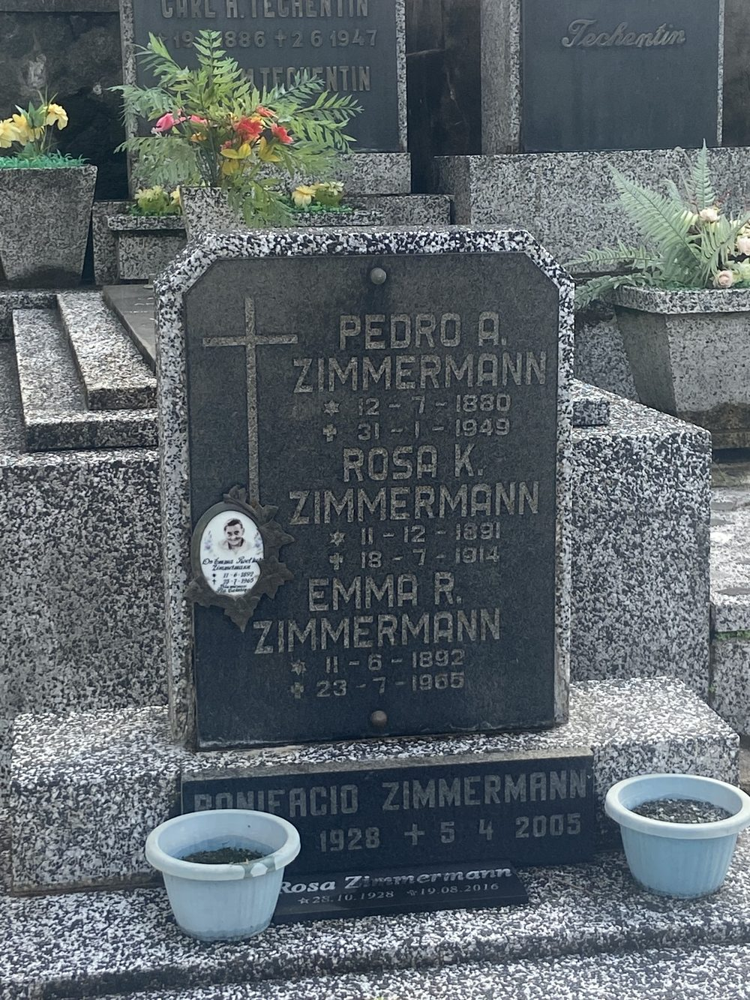
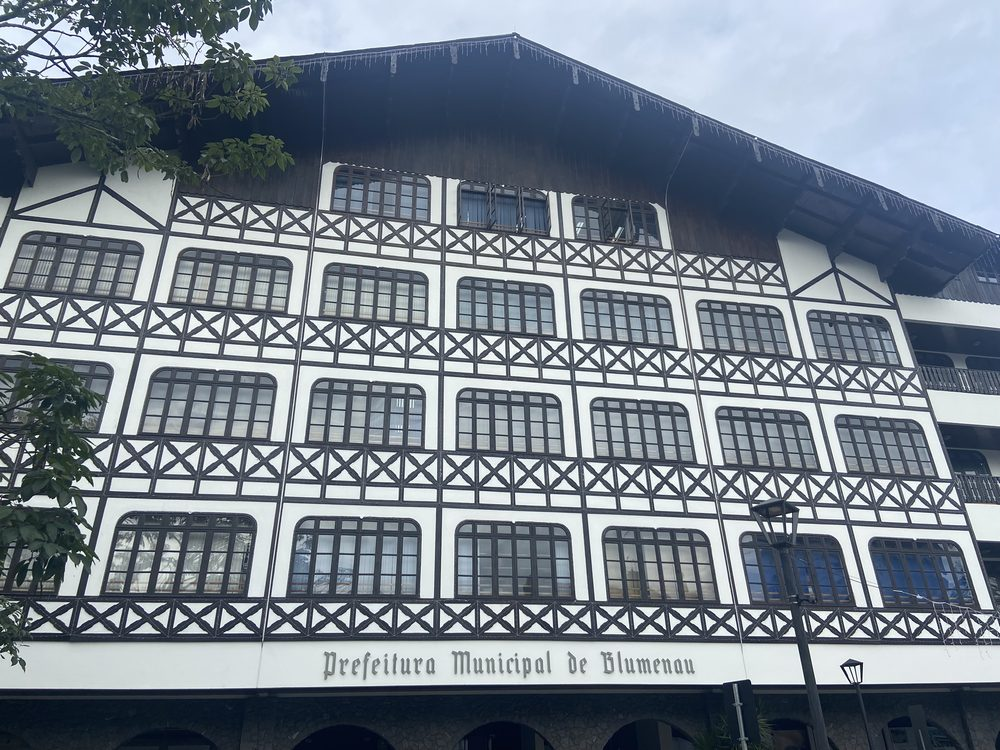
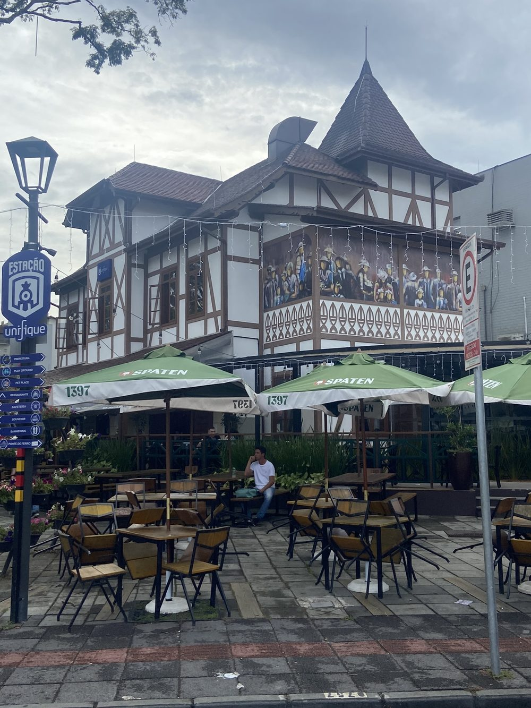
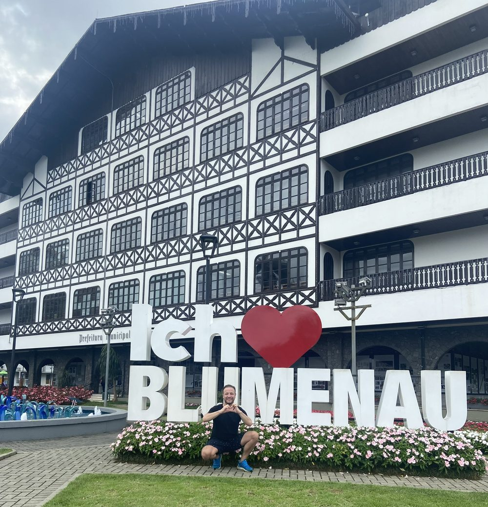